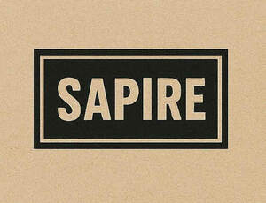

Trade Mark Journal No.2025/040 3 October 2025
UK00004269361 25 September 2025 (6,8,16,20,21,22,35)

- Class 6
- Aluminium foil; Aluminium foil paper; Metal foil for wrapping purposes; Aluminium foil for cooking purpose; Preserving foils of aluminium.
- Class 8
- Biodegradable cutlery; Disposable tableware [cutlery] made of plastics; Table knives, forks and spoons of plastic; Plastic spoons, table forks and table knives; Table cutlery [knives, forks and spoons]; Biodegradable knives; Biodegradable spoons; Spreaders [cutlery].
- Class 16
- Plastic material for packaging; Packaging materials; Printed packaging materials of paper; Plastic films for packaging; Containers of paper for packaging purposes; Plastic films for wrapping and packaging; Containers of paper for packaging; Bags and articles for packaging, wrapping and storage of paper, cardboard or plastics; Polythene films for wrapping or packaging; Plastic bags for packaging; Bags made of plastics for packaging; Cling film plastics for packaging; Carrier bags; Plastic shopping bags; Bags of plastics for lining refuse bins; Plastic bags for general use; Shopping bags of paper or plastic.
- Class 20
- Packaging containers of plastic; Portable boxes [containers] of plastic; Boxes made of plastic; Plastic boxes for packing; Packaging containers not of metal.
- Class 21
- Disposable aluminium foil containers for household purposes; Disposable aluminum foil containers for household purposes; Foil food containers; Biodegradable trays; Plastic bowls [household containers]; Compost containers for household use; Biodegradable bowls; Biodegradable cups; Biodegradable plates; Biodegradable paper pulp-based bowls; Biodegradable paper pulp-based cups; Biodegradable paper pulp-based plates; Biodegradable rice straws for drinking; Compostable cups; Biodegradable trays for domestic purposes; Plastic cups; Plastic plates; Kitchen containers; Cooking pots for use in microwave ovens.
- Class 22
- Sacks; Polythene bags [sacks] for the transport of materials in bulk; Packaging bags [sacks] of paper for bulk transportation; Polythene sacks for the transport of materials in bulk; Bags and sacks for packaging, storage and transport; Bags [sacks] for the transport and storage of materials in bulk.
- Class 35
- Retail services in relation to cups and glasses; Retail services in relation to cutlery; Sales promotions at point of purchase or sale, for others.
sapire limited